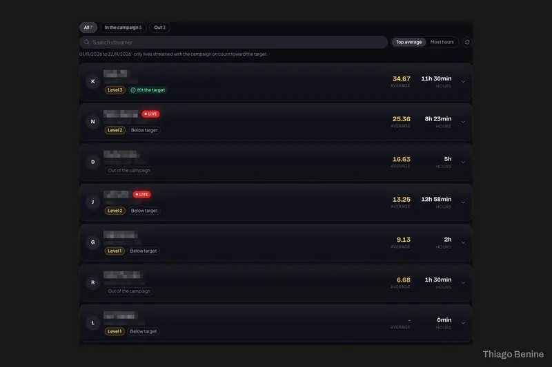

Apps
In-house ads with a campaign dashboard and reports
Games12 days
Minute-by-minute viewership tracking and a campaigns tab with goals, tiers and monthly closing.
Campaigns tab: the monthly target, levels, automatic month close, period filters and the month's metrics. Labels translated for this English version; the original is in Portuguese.
The game streaming platform wanted to track the hours and viewership of each streamer's live streams in campaigns with goals.
I started recording viewership minute by minute on the server and created the campaigns tab in the dashboard, with the average per stream, the average for the period and total hours. The second stage brought editable goals and tiers, an on and off switch per streamer, a forecast of the month's tier and automatic monthly closing.
Each closed month stores the goal and the result, and both stages went through automated tests before going live.
Tap an image to enlarge it.
